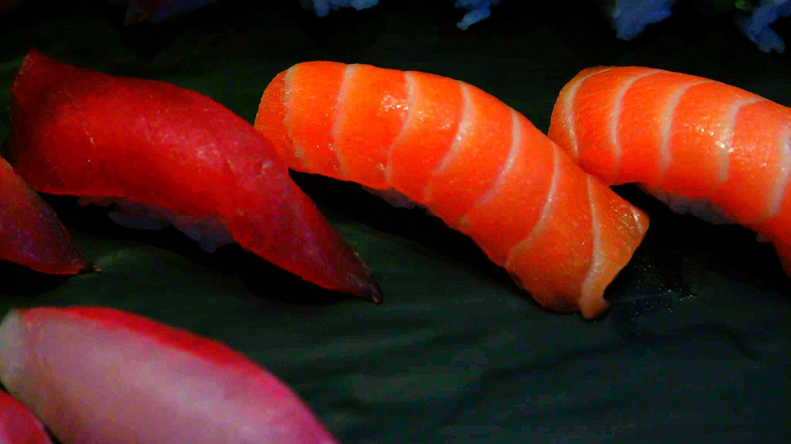
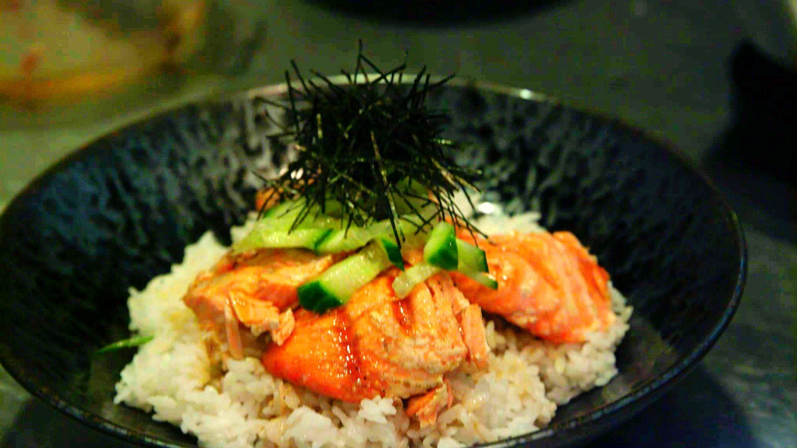

GATE S
Sushi
寿司3 items

Sashimi Platter with Rice
17.95GATE A
Sushi A La Carte
単品2 items

GATE E
Entree
丼・定食7 items

Beef Bowl
12.95Spicy Chicken Bowl
11.95Chicken Curry & Rice
11.95Beef Curry & Rice
12.95Bento Box
15.95GATE N
Noodle
麺6 items
Tempura Udon or Soba
12.95Chicken Udon or Soba
11.95Beef Udon or Soba
12.95Healthy Tofu Udon or Soba
10.95Deluxe Udon or Soba
15.95GATE M
Maki Sushi
巻き寿司8 itemsCalifornia Roll
7.95Rock'n Roll
8.50Spicy Tuna Roll
7.95Eskimo Roll
7.95Tempura Roll
9.95Dragon Roll
14.50Dynamite Roll
14.50GATE V
Vegetable Dishes
ベジタリアン8 itemsHealthy Tofu Udon or Soba
10.95Teriyaki Tofu Bowl
10.95Vegetable Curry & Rice
11.50Vegetable Sushi Combo
10.50Vegetable Roll
6.95Avocado Roll
5.50Cucumber Roll
4.95Inari Sushi (Bean Curd)
4.00GATE D
Side Order
サイド6 itemsMiso Soup
2.95Rice
2.50Brown Rice
3.25Edamame
4.95Seaweed Salad
5.25Gyoza (Pot Sticker)
7.50GATE B
Beverage
お飲み物7 items

Bottled Juice / Coke
3.95Bottled Water
3.25/4.25Hot Green Tea
2.25Bottled Green Tea
4.25Beer
6.50Good to knowAll Sales are subject to a 2% Employee Benefit Surcharge. Applicable Sales Tax will be added to all Purchases.
Menu source: sankaku-menu.pdf (2020). Photos are illustrative and may not show the exact dish.